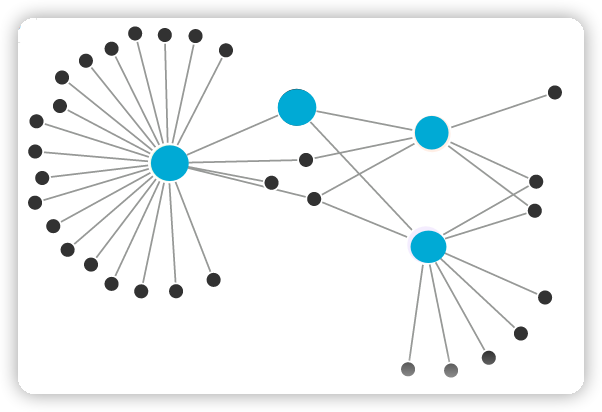
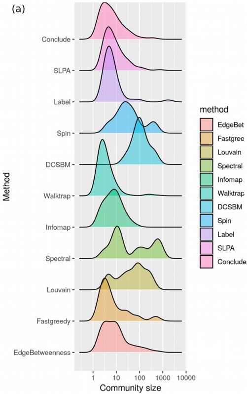

## 走马观花：图与网络 ### Graph & Networks 2023 Oct
## 什么是图？ <ul> <li class="fragment">图是一种表达关系的数学结构</li> <li class="fragment">由顶点和边组成</li> <li class="fragment">顶点用于代表事物</li> <li class="fragment">连接两顶点的边则用于表示两个事物间具有这种关系</li> </ul>
其实就是一堆点，被一些线连起来
十八世纪 柯尼斯堡（今天俄罗斯-加里宁格勒市） 一条大河穿城而过（普列戈利亚河） 柯尼斯堡除了被一分为二以外，还包含河中的两个岛屿 人们建有七座桥梁连接着不同的陆地
 <p class="fragment"> 最多只能有两个点有奇数个边 </p>
$$G = (V, E)$$ <div class="report"> $$\begin{array}{c} { \begin{array}{c|c} \text{V} & \text{vertex/顶点/节点/实体}\\ \hline \text{E} & \text{edge/边/关系}\\ \end{array} } \end{array}$$ </div>
$$G = (V, E)$$ <div class="report"> $$\begin{array}{c} { \begin{array}{c|c} \text{V} & \text{vertex/顶点/实体}\\ \hline \text{E} & \text{edge/边/关系}\\ \end{array} } \end{array}$$ </div>
## 几个图的例子


## 图能干什么？ <ul> <li class="fragment">假如给你：某个时间段内，某地区所有人之间微信转账记录</li> <li class="fragment">挖掘：嫖娼</li> </ul> <p class="fragment">在风控领域的应用</p>
### 关联分析 在一家美国超市里，啤酒喝尿布这两种风马牛不相及的商品居然摆在一起，而且销量都增加了。 原来是因为妻子要丈夫回家前买尿布，然后丈夫顺手买了自己喜欢的啤酒。 <p class="fragment">问题：达到一定频次为前提</p>
### 换成图呢？ 
## 一些关于图的枯燥概念
### 有向/无向 
### 加权/无权 
```mermaid %%{init: {'theme': 'dark', 'themeVariables': { 'darkMode': true }}}%% flowchart TD A("加权有向图") B("无权有向图") C("加权无向图") D("无权无向图") A == "阈值化" ==> B A == "对称化" ==> C B == "对称化" ==> D C == "阈值化" ==> D ```
### 度(degree) | | | | -- | -- | | 度 | 该节点所连接的边数之和 | | 加权度 | 该节点所连接的边的权重之和 | | 出度 | 有向图，该节点指向其他节点的边数之和 | | 入度 | 有向图，其他节点指向该节点的边数之和 |
### 密度(density) 存在的边数与最多可以有多少条边之比 $$D = \frac{2|E|}{|V|(|V| - 1)}$$ <ul> <li>|E|: 边的数量</li> <li>|V|: 节点的数量</li> <li>最多可以有多少条边: $\frac{|V|(|V| - 1)}{2}$</li> </ul>
### 路径 一个有限或无限的边序列，这些边连接着一系列点 <ul> <li>深度优先搜索（DFS）</li> <li>广度优先搜索（BFS）</li> <li><a href="https://zh.wikipedia.org/wiki/最短路问题" target="_blank">最短路径问题</a>（Floyed/Dijkstra/Bellman-Ford...）</li> <li><a href="https://zh.wikipedia.org/wiki/柯尼斯堡七桥问题" target="_blank">柯尼斯堡七桥问题</a></li> <li><a href="https://zh.wikipedia.org/wiki/旅行推销员问题" target="_blank">旅行推销员问题</a></li> </ul>
### 离心率(eccentricity) 该节点到图中其他节点的最大距离 <ul class="fragment"> <li>半径(radius)：图中所有离心率的最小值</li> <li>直径(diameter)：图中所有离心率的最大值</li> </ul>
### 团(clique) 无向图中，两两之间有边连接的节点部分 
### 聚类系数(clustering coefficient) <ul> <li>节点之间结集成团程度的系数</li> <li>(你的朋友们之间是否也是朋友)</li> <li>节点一跳邻域内封闭三角形的比例</li> </ul> $$c_u = \frac{2 T(u)}{deg(u)(deg(u)-1)}$$ <div class="report"> $$\begin{array}{c} { \begin{array}{c|c} \text{T(u)} & \text{节点一跳邻域内封闭三角形数量}\\ \hline \text{deg(u)} & \text{节点的度}\\ \end{array} } \end{array}$$ </div>

### 度中心性(degree centrality) $$C_{D}(v_i) = \frac{d_i}{N-1}$$ 一个节点的度越大就意味着这个节点越重要
### 介数中心性(betweenness centrality) $$BC_i= \sum_{v_s≠v_i≠v_t,s < t}\frac{σ_{st}(v_i)}{σ_{st}}$$ <div class="report"> $$\begin{array}{c} { \begin{array}{c|c} \text{$σ_{st}$} & \text{表示为从节点s到节点t的最短路径的总数量}\\ \hline \text{$σ_{st}(v_i)$} & \text{这些最短路径中经过结点$v_i$的路径的数量}\\ \end{array} } \end{array}$$ </div> 经过某个节点的最短路径的数目越多，这个节点越重要
### 接近中心性(closeness centrality) $$D_{c}(v_i) = [\frac{1}{N-1}\sum_{j≠i}^{n}g(v_i,v_j)]^{-1}=\frac{n-1}{\sum_{j≠i}^{n}g(v_i,v_j)}$$ <div class="report"> $$\begin{array}{c} { \begin{array}{c} \text{$g(v_i,v_j)$表示结点$v_i$和$v_j$的最短距离}\\ \end{array} } \end{array}$$ </div> 节点到所有其他节点之间的距离越短，这个节点越重要（越接近几何中心）
### 特征向量中心性(eigentvector centrality) 一个节点邻居越多，邻居越重要，这个节点就越重要
## 一些网络类型
### 规则网络 节点之间通过规则或者固定的连接方式进行交互 
### 随机网络 <ul> <li>由Erdös和 Rényi于1960年提出</li> <li>任意给定N个节点，每两个节点之间以概率p相连（0≤p≤1），生成一个边数约为pN(N-1)/2的网络</li> </ul>  特点：没有聚类特性但具有较小的平均路径长度
### 小世界网络 <ul> <li>由Watts和Strogatz于1998年提出</li> <li>通过用非常小的概率p移除规则网络里的原始边，并随机连接一个新的端点</li> </ul>  特点：平均路径长度较小，且聚类系数很大（抱团）
#### 6度分割（B数） 

#### 社团/社区（community） <ul> <li>内部之间连接比较紧密</li> <li>与外部的连接比较稀疏</li> </ul> 
| | | | -- | -- | | community | 强调「内外之别」，在一个 Community 的内部，节点之间有很多连接，而这些节点与其它 Community 节点间连接相对较少 | | cluster | 强调「近邻相似」，因为考虑到这种相似性，在做聚类分析的时候，将相似的数据（或者节点）聚在一起，而我们平时所说的 clustering coefficient 也可以理解成在看节点邻居们的相似性 | | clique | 强调「两两相连」，它描述的不是通常的「社区」，而是一个全连接的完全子图 |

### 无标度网络 <ul> <li>网络中不断加入新的节点</li> <li>新节点加入后优先与网络中节点度大的节点连接</li> </ul>  特点：中枢节点，度幂律分布

### 真实世界的网络 <ul> <li>节点/边的数量巨大</li> <li>节点类型多样</li> <li>拓扑结构的复杂</li> <li>动力学复杂性</li> <li>几乎都具有小世界特性</li> <li>度分布通常呈现幂律分布</li> </ul>
### 复杂网络(complex network) 具有自组织、自相似、吸引子（网络的内聚倾向）、小世界、无标度中部分或全部性质的网络称为复杂网络。 <p class="align-right">－ 钱学森</p>
### 应用领域 <ul> <li>物流运输</li> <li>智能电网可靠性分析</li> <li>病毒传播模型</li> <li>网络舆情分析与预警</li> <li>网络热点发现与追踪</li> <li>意见领袖挖掘</li> <li>用户观点及情感分析</li> <li>网络用户行为建模和个性化分析</li> <li>网络关系挖掘与用户关联分析</li> <li>竞争性分析与挖掘</li> <li>……</li> </ul>
<h2>万物皆网络</h2> <h2 class="fragment">万物皆可embedding</h2>
### embedding之后的好处 <ul> <li>分类</li> <li>相似</li> <li>聚类（community）</li> <li>边预测</li> <li>异常节点检测</li> <li>……</li> </ul>
### 图的表示 <ul> <li><a href="https://github.com/wzhe06/Reco-papers/blob/master/Embedding/%5BGraph%20Embedding%5D%20DeepWalk-%20Online%20Learning%20of%20Social%20Representations%20(SBU%202014).pdf" target="_blank">DeepWalk：随机游走构造“句子”，再直接用Word2Vec</a></li> <li><a href="https://github.com/wzhe06/Reco-papers/blob/master/Embedding/%5BNode2vec%5D%20Node2vec%20-%20Scalable%20Feature%20Learning%20for%20Networks%20(Stanford%202016).pdf" target="_blank">Node2Vec：DeepWalk + BFS/DFS（更好的表达网络的同质性）</a></li> <li><a href="https://github.com/wzhe06/Reco-papers/blob/master/Embedding/[LINE]%20LINE%20-%20Large-scale%20Information%20Network%20Embedding%20(MSRA%202015).pdf" target="_blank">LINE - Large-scale Information Network Embedding</a></li> <li><a href="https://github.com/wzhe06/Reco-papers/blob/master/Embedding/%5BSDNE%5D%20Structural%20Deep%20Network%20Embedding%20(THU%202016).pdf" target="_blank">SDNE - Structural Deep Network Embedding</a></li> <li>GCN - Graph Convolutional Networks</li> <li>GraphSAGE - Graph Sample and Aggregate（解决GCN内存的问题）</li> <li>Graph Attention Networks</li> <li>……</li> </ul>
### 社区检测（SOTA） <a href="https://github.com/Yuzztju/Community-Detection-Papers" target="_blank"> https://github.com/Yuzztju/Community-Detection-Papers </a> <p class="fragment">没有最好，只有合适</p>
## 资源 <ul> <li>《网络科学导论》</li> <li>《复杂网络理论及其应用》</li> <li><a href="https://www.maths.ed.ac.uk/~v1ranick/papers/wilsongraph.pdf" target="_blank">《Introduction to Graph Theory》</a></li> <li><a href="https://meskc.ac.in/wp-content/uploads/2018/12/A-Textbook-of-Graph-Theory-R.-Balakrishnan-K.-Ranganathan.pdf" target="_blank">《A Textbook of Graph Theory》</a></li> <li><a href="https://distill.pub/2021/gnn-intro/" target="_blank">A Gentle Introduction to Graph Neural Networks</a></li> <li><a href="https://arxiv.org/pdf/1812.08434.pdf" target="_blank">[arxiv] Graph Neural Networks: A Review of Methods and Applications</a></li> <li><a href="https://arxiv.org/pdf/1901.00596.pdf" target="_blank">[arxiv] A Comprehensive Survey on Graph Neural Networks</a></li> <li><a href="https://arxiv.org/pdf/1812.04202.pdf" target="_blank">[arxiv] Deep Learning on Graphs: A Survey</a></li> <li><a href="https://github.com/thunlp/GNNPapers/blob/master/README.md" target="_blank">GNN Papers</a></li> <li><a href="" target="_blank"></a></li> </ul>
## 好了，就先到这儿了 以上只是图与网络之冰山一角